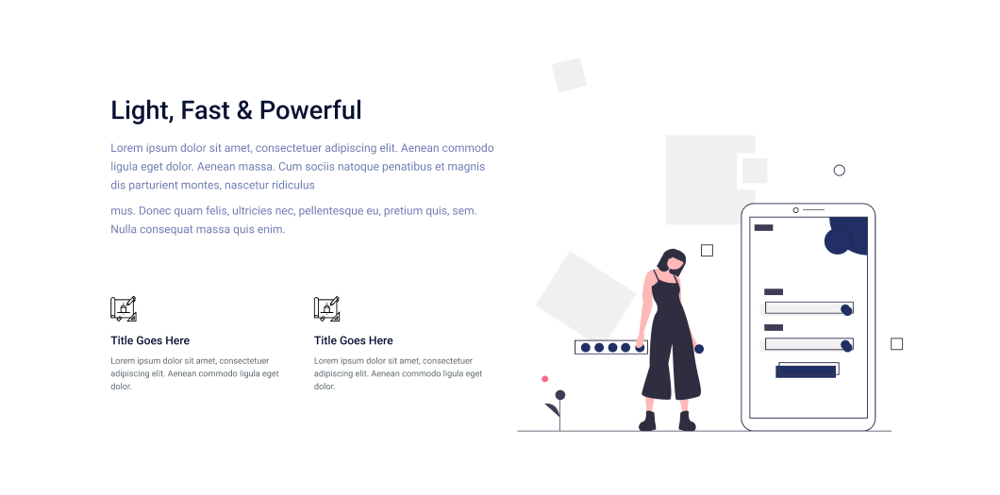

By Giovanni Francesco Guarnieri
By Giovanni Francesco Guarnieri
O que é BoxModel?
O Box Model é um conceito fundamental do CSS que define como os elementos HTML são renderizados na tela. Cada elemento HTML é composto por quatro partes principais: conteúdo, padding, border e margin. O conteúdo é a área interna do elemento, onde o texto e as imagens são exibidos. O padding é a área entre o conteúdo e a borda, que pode ser preenchida com cor ou imagem. A borda é a linha que envolve o elemento, que pode ser estilizada com cor, largura e estilo. A margem é a área externa do elemento, que define o espaçamento entre os elementos vizinhos.

BoxModel em elementos Inline e Block
Como comentado no material de HTML, os elementos HTML são divididos em duas categorias principais: inline e block. Elementos inline são renderizados em linha, um após o outro, enquanto elementos block são renderizados em blocos, um abaixo do outro. Elementos inline não respeitam o Box Model, pois não têm padding, border ou margin. Elementos block respeitam o Box Model, pois têm padding, border e margin.
Width e Height
As propriedades width e height CSS são utilizadas para definir a largura e a altura de um elemento HTML. A largura e a altura podem ser definidas em pixels, porcentagem, ems ou outras unidades de medida.
- width: define a largura do elemento.
- width: 100px;
- width: 50%;
- height: define a altura do elemento.
- height: 100px;
- height: 30%;
Quando é utilizado porcentagem para definir a largura e a altura, o elemento se ajusta ao tamanho do elemento pai.
Exemplo de aplicação de width e height em btn
/* Seletor */
.btn {
/* Propriedade: Valor */
width: 100px;
height: 50px;
}
Margens
As margens CSS são utilizadas para definir o espaçamento entre os elementos HTML. Existem várias propriedades de margem CSS, como margin-top, margin-right, margin-bottom, margin-left, margin.
- Margem automática - Aplica margem automaticamente
- margin: auto;
- margin-left: auto;
- margin-right: auto;
- margin-top: define o espaçamento superior.
- margin-top: 10px;
- margin-right: define o espaçamento direito.
- margin-right: 20px;
- margin-bottom: define o espaçamento inferior.
- margin-bottom: 30px;
- margin-left: define o espaçamento esquerdo.
- margin-left: 40px;
- Margem: modo compilado (y, x)
- margin: 0 auto;
- Margem: modo compilado (top, right, bottom, left)
- margin: 10px 20px 30px 40px;
Exemplo de aplicação de margem em btn
/* Seletor */
.btn {
/* Propriedade: Valor */
margin: 10px 20px 30px 40px;
}
Padding
O padding CSS é utilizado para definir o espaçamento entre o conteúdo e a borda de um elemento HTML. Existem várias propriedades de padding CSS, como padding-top, padding-right, padding-bottom, padding-left, padding.
- padding-top: define o espaçamento superior.
- padding-top: 10px;
- padding-right: define o espaçamento direito.
- padding-right: 20px;
- padding-bottom: define o espaçamento inferior.
- padding-bottom: 30px;
- padding-left: define o espaçamento esquerdo.
- padding-left: 40px;
- Padding: modo compilado (y, x)
- padding: 10px 20px;
- Padding: modo compilado (top, right, bottom, left)
- padding: 10px 20px 30px 40px;
Exemplo de aplicação de padding em btn
/* Seletor */
.btn {
/* Propriedade: Valor */
padding: 10px 20px 30px 40px;
}
Border
A borda CSS é utilizada para definir a linha que envolve um elemento HTML. Existem várias propriedades de borda CSS, como border-top, border-right, border-bottom, border-left, border.
- border-top: define a borda superior.
- border-top: 1px solid #000;
- border-right: define a borda direita.
- border-right: 2px solid #000;
- border-bottom: define a borda inferior.
- border-bottom: 3px solid #000;
- border-left: define a borda esquerda.
- border-left: 4px solid #000;
- Border: modo compilado
- border: 1px solid #000;
Exemplo de aplicação de border em btn
/* Seletor */
.btn {
/* Propriedade: Valor */
border: 1px solid #000;
}
Display Flex
O display flex é uma propriedade CSS que permite criar layouts flexíveis. Com o display flex, é possível alinhar os elementos HTML horizontalmente ou verticalmente, distribuir o espaço disponível entre os elementos e reorganizar os elementos HTML em diferentes tamanhos de tela.
Para utilizar o display flex, basta adicionar a propriedade display: flex; ao seletor CSS desejado.
- display: flex; - Define o elemento como um container flexível.
- flex-direction: row; - Define a direção dos elementos como linha.
- flex-direction: column; - Define a direção dos elementos como coluna.
- flex-wrap: wrap; - Quebra os elementos em linhas.
- flex-wrap: nowrap; - Não quebra os elementos em linhas.
- justify-content: center; - Alinha os elementos no centro.
- justify-content: flex-start; - Alinha os elementos no início.
- justify-content: flex-end; - Alinha os elementos no final.
- justify-content: space-between; - Distribui o espaço entre os elementos.
- justify-content: space-around; - Distribui o espaço ao redor dos elementos.
- align-items: center; - Alinha os elementos verticalmente no centro.
- align-items: flex-start; - Alinha os elementos verticalmente no início.
- align-items: flex-end; - Alinha os elementos verticalmente no final.
- gap: 16px; - Aplica espaço entre os itens

Quando o display flex é aplicado a um elemento, todos os elementos filhos desse elemento se tornam flexíveis. Isso significa que os elementos filhos podem ser alinhados horizontalmente ou verticalmente, distribuídos no espaço disponível e reorganizados em diferentes tamanhos de tela.
Quando o flex-direction é aplicado, o justify-content inverte a direção de alinhamento. Por exemplo, se o flex-direction for row e o justify-content for center, os elementos serão alinhados verticalmente no centro. Se o flex-direction for column e o justify-content for center, os elementos serão alinhados horizontalmente no centro. O mesmo se aplica ao align-items, que inverte a direção de alinhamento. Por exemplo, se o flex-direction for row e o align-items for center, os elementos serão alinhados verticalmente no centro. Se o flex-direction for column e o align-items for center, os elementos serão alinhados horizontalmente no centro.
Exemplo de aplicação de display flex em container
/* Seletor */
.container {
/* Propriedade: Valor */
display: flex;
flex-direction: row;
justify-content: center;
align-items: center;
}
Exemplo - Flexbox - Interpretação CSS com base em imagem

Atividade de Fixação CSS
Desenvolver o HTML e CSS da imagem abaixo
{kind=link}
{kind=link}